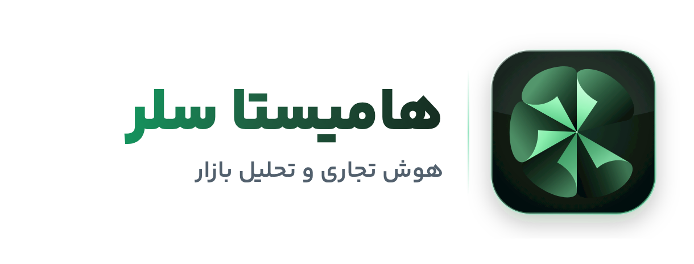

راهنمای جامع کاربر · نسخه ۳٫۲
هامیستا سلر
هوش تجاری و تحلیل بازار
از پیدا کردن مشتری و ساختن بانک اطلاعات کسبوکارها، تا قیمتگذاری علمی کالا و سنجش سلامت برند؛ همه در یک برنامه سبک و پرتابل ویندوز.
اطلاعات مشتریاناستخراج اطلاعات عمومی کسبوکارها، بانک مشتریان، کمپین و دستیار گفتگو
تحلیل محصولقیمت بازار با بازه دلخواه، حالت فروشنده/خریدار، محصولات با عکس، برندها و کانالهای فروش
تحلیل برندپیدا کردن خودکار سایت و پیج، آمیخته بازاریابی 4P، SWOT، کانالها و رقبا
تیم هامیستا · hamista.ir · تلگرام @hamistaa{{DATE}}
۱
شروع کار
سه نسخه، بدون نصب، با دادههای کنار خود برنامه
| فایل | برای چه کسی | لایسنس |
|---|
| HamistaSeller.exe | مشتری؛ همین فایل را بفروشید یا بفرستید | لازم دارد (آفلاین یا حساب آنلاین) |
| HamistaSeller-Master.exe | استفاده شخصی شما، بدون محدودیت | لازم ندارد؛ آن را منتشر نکنید |
| HamistaAdmin.exe | پنل مدیر: صدور لایسنس، مشتریان، سرور | — |
اجرا
- فایل را در یک پوشه دلخواه بگذارید (مثلاً D:\Apps) و اجرا کنید. برنامه نصب نمیشود.
- دادهها در پوشه HamistaSeller-Data کنار فایل ساخته میشوند؛ برای انتقال به سیستم دیگر، فایل و همین پوشه را با هم کپی کنید.
- برای استخراج و قیمتیابی، Microsoft Edge یا Google Chrome باید روی ویندوز باشد (Edge روی همه ویندوزهای ۱۰ و ۱۱ هست).
فعالسازی نسخه مشتری
- مشتری برنامه را باز میکند؛ «کد سیستم» او نمایش داده میشود و آن را برای شما میفرستد.
- شما در پنل مدیر ← مشتریان برای همان کد سیستم، پلن و تاریخ پایان لایسنس صادر میکنید.
- مشتری کد لایسنس را در «تنظیمات ← لایسنس ← کد آفلاین» میچسباند. اگر سرور آنلاین دارید، میتواند با نام کاربری و رمز هم وارد شود.
مهم: اگر پیام «کد لایسنس معتبر نیست» دیدید، کلید خصوصی داخل فایل KEYS-PRIVATE.txt را یک بار در «پنل مدیر ← کلید و پشتیبان ← ورود کلید خصوصی» وارد کنید و دوباره صادر کنید. این فایل را جای امن نگه دارید و برای کسی نفرستید.
۲
آشنایی با محیط برنامه
سه فضای کاری، منوی کناری، و حالت تیره یا روشن
سوییچر فضای کاری
سه دکمه بالای منو: اطلاعات مشتریان، تحلیل محصول و تحلیل برند. با هر کدام، منوی کناری فقط صفحههای همان فضا را نشان میدهد.
جستجوی سریع مخاطب
نام، شماره یا شهر را در کادر جستجوی منو بنویسید؛ از هر صفحهای به کارت مشتری میرسید.
حالت تیره / روشن و زبان
پایین منو: دکمه ماه/خورشید برای تغییر حالت، و EN برای رابط انگلیسی. انتخاب شما ذخیره میشود.
کار در پسزمینه
استخراج و قیمتیابی در پسزمینه اجرا میشوند؛ کارت پیشرفت پایین منو همیشه وضعیت را نشان میدهد و میتوانید در صفحههای دیگر کار کنید.
۳
داشبورد
وضعیت بانک مشتریان در یک نگاه
داشبورد در حالت تیره: بنر آخرین استخراج با عکس همان شهر، شاخصها، قیف پیگیری و روند ورود مخاطب.
- بنر و شاخصها: آخرین استخراج با عکس همان شهر، کل مخاطبان و پیامهای موفق با رشد نسبت به دوره قبل.
- پیگیری و روند: قیف «پیگیرینشده ← در حال پیگیری ← علاقهمند ← مشتری» و نمودار ورود مخاطب هفتگی یا روزانه.
- بینش هوشمند و شروع سریع: یک پیشنهاد عملی از دادههای خودتان، و کارتهای عکسدار حوزهها که با یک کلیک فرم استخراج را آماده میکنند.
۴
استخراج کسبوکارها
ساختن بانک مشتری از اطلاعات عمومی کسبوکارها
بنر بالای فرم با انتخاب استان و شهر، عکس همان محدوده را نشان میدهد.
- بانک مقصد را انتخاب کنید یا با «بانک جدید» بسازید (مثلاً «کافههای شیراز»).
- کلمات کلیدی را بنویسید و Enter بزنید؛ هر کلمه جداگانه جستجو میشود. چند هممعنی (کافه، کافیشاپ) پوشش را بیشتر میکند.
- محدوده: زبانه «شهرستان» (یک شهرستان یا «همه شهرهای استان») یا «شهر / منطقه» برای یک محله دقیق (مثل تجریش یا منطقه ۵).
- تعداد برای هر کلمه سقف بررسی است. «خواندن سایت کسبوکار» ایمیل، شبکههای اجتماعی و نام مدیر را هم از سایت هر کسبوکار میخواند (کندتر ولی کاملتر).
- «شروع استخراج» را بزنید. سمت چپ، مراحل و گزارش زنده را میبینید. اگر کار نیمهکاره ماند، از همان صفحه «ادامه» بزنید.
دقت خروجی: شمارهها به قالب استاندارد ایران تبدیل میشوند، موبایل و تلفن ثابت جدا ذخیره میشوند، تکراریها در هر بانک رد میشوند و فقط کسبوکارهای دارای حداقل یک راه ارتباطی ذخیره میشوند.
تنظیمات پیشرفته مرورگر: تعداد تب همزمان، نمایش پنجره مرورگر و «جستجو در محلههای اطراف وقتی نتیجه کم است». اگر سایت تأیید «ربات نیستم» خواست، پنجره باز میشود؛ تأیید کنید تا ادامه دهد.
۵
بانکها، مخاطبان و کارت مشتری
مرتبسازی، پیگیری و خروجی گرفتن
ردیفها شمارهگذاری شدهاند؛ موبایل و تلفن ثابت در دو ستون جدا؛ آیکن رنگی هر راه ارتباطی.
- فیلتر بر اساس استان، شهرستان، حوزه کاری، وضعیت، برچسب و نوع راه ارتباطی.
- انتخاب گروهی: تغییر وضعیت، برچسب، کپی یا انتقال به بانک دیگر، حذف.
- ورود Excel / CSV و خروجی Excel، CSV و vCard (برای گوشی).
- زبانه تحلیل و تفکیک: سهم هر استان، شهرستان و حوزه کاری.
کارت مشتری دو ستونه: راههای ارتباطی با کپی و باز کردن، و مشخصات، وضعیت و یادداشت.
۶
کمپینها و دستیار گفتگو
یک پیام برای یک گروه؛ با پیامک یا پیامرسان شخصی خودتان
- مخاطبان: بانک و وضعیت را انتخاب کنید (یا ردیفهایی که در جدول انتخاب کردهاید).
- روش ارسال: «پیامک خودکار» از پنل پیامک شما، یا «پیامرسان با حساب خودتان» (واتساپ، تلگرام، ایتا، بله).
- متن: با جاینگهدارهایی مثل {name} و {city}؛ پیشنمایش، تعداد پیامک و زمان تقریبی را میبینید و میتوانید ارسال آزمایشی بزنید.
دستیار گفتگو
یک بار با «ورود / تغییر حساب» وارد پیامرسان خودتان شوید. صف مخاطبان ساخته میشود؛ گفتگوی هر نفر با متن آماده باز میشود و ارسال را خودتان میزنید. با «حساب ندارد» کنار آن شماره علامت میخورد که در آن پیامرسان نیست. «خروج کامل» ورود ذخیرهشده را پاک میکند.
رعایت قوانین: شمارههای «لیست عدم ارسال» و کسانی که «لغو۱۱» فرستادهاند هرگز پیام نمیگیرند. ارسال انبوه خودکار در پیامرسانها عمداً ساخته نشده تا حساب شما مسدود نشود.
۷
زمانبندی و کار در پسزمینه
استخراج خودکار روزانه یا هفتگی
- در «زمانبندی»، استخراج یکباره، روزانه یا هفتگی در ساعت دلخواه بسازید.
- برنامه باید باز یا در سینی ویندوز (کنار ساعت) باشد. «اجرا همراه ویندوز» را روشن کنید تا همیشه آماده باشد.
- نتیجه هر اجرا در «تاریخچه» با دکمه «ادامه» ثبت میشود.
۸
تحلیل محصول
قیمت واقعی بازار، قیمت فروش پیشنهادی و بهترین منبع خرید
بالای صفحه: حالت فروشنده/خریدار، کالا، برند (فهرست الفبایی)، بازه قیمت، تعداد نتیجه، ترتیب و نوع تطبیق.
- حالت را انتخاب کنید: «فروشنده هستم» (قیمت پیشنهادی فروش و حاشیه سود) یا «خریدار هستم» (ارزانترین معتبر، بهترین ارزش، معتبرترین فروشنده).
- نام کالا را بنویسید. برند را از فهرست الفبایی و بدون تکرار انتخاب کنید؛ اگر نبود، همانجا تایپ کنید.
- بازه قیمت (حداقل/حداکثر تومان) را بدهید تا آگهیهای بیربط مثل «۱۰۰۰ تومان» یا لوازم گران حذف شوند.
- تعداد نتیجه از هر منبع (۳۰ تا ۲۰۰) و ترتیب در منبع (مرتبطترین، پرفروشترین، پربازدیدترین، ارزانترین، گرانترین، جدیدترین) را تعیین کنید. برنامه چند صفحه را میخواند تا به تعداد برسد.
- تطبیق دقیق: «چوب پینگ پنگ» فقط چوب را میآورد، نه میز. «تطبیق گسترده» نتایج نزدیکتر را هم نگه میدارد. غلطهای رایج نوشتاری (فریز/فریزر، ی و ک عربی) خودکار یکی میشوند.
- منطقه (استان، شهر و «فقط همین منطقه») برای دیوار و شیپور است.
- «تحلیل بازار» را بزنید.
ورود و کپچا: اگر سایتی ورود بخواهد یا «من ربات نیستم» نشان دهد، برنامه یک پنجره مرورگر باز میکند؛ کار را در آن انجام دهید تا جستجو خودکار ادامه پیدا کند (تا ۱۰ دقیقه). کنار هر منبع دکمه «ورود» هم هست.
زبانههای نتیجه
| زبانه | چه چیزی |
|---|
| خلاصه | کف، میانه، سقف، قیمت پیشنهادی یا بهترین خرید، توصیه، زیردستهها و جستجوهای مرتبط. |
| محصولات | عکس، نام کامل، نشان منبع، فروشنده و شهر، امتیاز و فروش، قیمت، زمان بهروزرسانی و ارزش؛ مرتبسازی بر اساس ارزش، ارزانترین، گرانترین، امتیاز، نظر، فروش و جدیدترین. |
| برندها | فهرست الفبایی برندها با تعداد، کمترین و میانه قیمت؛ «فقط این برند» و «افزودن به برندها». |
| کانالها | هر منبع فروش: تعداد عرضه، میانه، کف و روش خرید. |
| تاریخچه | تحلیلهای قبلی همین کالا و روند قیمت. |
زبانه محصولات: عکس و نام کامل کالا، منبع، قیمت و زمان آخرین بهروزرسانی.
اعداد چطور حساب میشوند
| شاخص | روش |
|---|
| کف و سقف معتبر | قیمتهای غیرعادی با روش IQR کنار گذاشته میشوند؛ اگر وزن در عنوان باشد، مقایسه «هر کیلوگرم / لیتر» است. |
| میانگین وزنی | فروشنده معتبرتر (امتیاز و نظر بیشتر) وزن بیشتری دارد. |
| قیمت پیشنهادی فروش | بهای تمامشده × (۱ + حاشیه هدف)، محدود به بازه رقابتی و گرد شده به قیمت قفسهای. |
| ارزش خرید | ۵۵٪ مزیت قیمت، ۳۵٪ امتیاز فروشنده، ۱۰٪ تعداد نظر. |
SRP = shelf( clamp( cost × (1 + margin), P25, P75 ) )
زبانه برندها: فهرست الفبایی و بدون تکرار.
بازار این ماه: صفحه خالی «تحلیل محصول» کالاهای پرجستجوی ۳۰ روز اخیر شما را با تغییر میانه قیمت نشان میدهد. با یک کلیک دوباره تحلیل کنید.
حریم خصوصی: از دیوار و شیپور فقط عنوان، قیمت، عکس، شهر و زمان آگهی خوانده میشود؛ هیچ شماره یا اطلاعات تماسی خوانده نمیشود.
۹
تحلیل برند
از یک نام تا تحلیل کامل بازاریابی
- «افزودن برند ما» یا «افزودن رقیب»: فقط نام و دسته کالا کافی است. سایت و اینستاگرام را خالی بگذارید تا از روی نام پیدا شوند.
- «تحلیل» را بزنید. برنامه سایت و پیج را پیدا میکند، دسته کالا و خود برند را در ترب، دیجیکالا و باسلام جستجو میکند و سایت را ممیزی میکند.
آمیخته بازاریابی (محصول، قیمت، توزیع، ترویج)، کانالها و SWOT.
| بخش | چه چیزی |
|---|
| شاخص سلامت | حضور در بازار، کیفیت درکشده، حضور دیجیتال و شبکه اجتماعی (۰ تا ۱۰۰). |
| آمیخته 4P | امتیاز و توضیح برای تنوع محصول، جایگاه قیمت، گستردگی توزیع و ترویج. |
| کانالها و محصولات | کانالهای فروش برند با سهم و میانه، پرفروشترین محصولات و فروشندگان اصلی. |
| رقبا | برندهای دیگر همان دسته با سهم و شاخص قیمت. |
| SWOT | قوت، ضعف، فرصت و تهدید به زبان ساده، با اقدامهای پیشنهادی. |
تاریخچه
صفحه «تاریخچه» زبانههای جدا دارد: استخراجها، تحلیل محصول، تحلیل برند (با تغییر امتیاز نسبت به دفعه قبل)، کمپینها و فعالیتها.
۱۰
تنظیمات، پشتیبان و لایسنس
همه چیز در یک صفحه با زبانههای جدا
| زبانه | کار |
|---|
| عمومی | مسیر مرورگر، اجرا همراه ویندوز، سرعت و تعداد تب. |
| پنل پیامک | اتصال پنل پیامک با ارسال آزمایشی. |
| قالبهای پیام / لیست عدم ارسال | متنهای آماده و شمارههایی که نباید پیام بگیرند. |
| ماژولها | روشن و خاموش کردن «خواندن سایت کسبوکار». |
| پشتیبانگیری | پشتیبان دستی و بازگردانی کل دادهها. |
| لایسنس | «حساب آنلاین» یا «کد آفلاین»، کد سیستم و همگامسازی. |
| درباره | نسخه برنامه و راههای تماس با پشتیبانی. |
۱۱
پنل مدیر
فروش و مدیریت لایسنس مشتریان
- مشتریان: ثبت مشتری با کد سیستم، صدور و تمدید لایسنس (تمدید از تاریخ پایان فعلی اگر هنوز فعال است، وگرنه از امروز).
- کلید و پشتیبان: ورود یا ساخت کلید امضا، پشتیبانگیری از کلید.
- سرور (اختیاری): کاربران آنلاین، پلنها، دوره آزمایشی، اعلانها و «سناریو»ها برای اصلاح از راه دور.
اصلاح از راه دور قیمتیابی: اگر ساختار سایتی عوض شد، سناریوی market.<id>.api یا market.<id>.page (برای torob, digikala, basalam, emalls, divar, sheypoor) را تنظیم کنید؛ نیازی به ساخت دوباره برنامه نیست.
۱۲
رفع اشکال و پرسشهای رایج
کوتاه و کاربردی
| مشکل | راه حل |
|---|
{{PROBLEMS}}
| قیمتیابی برای یک سایت «خطا» داد | اینترنت را بررسی کنید و کمی بعد تکرار کنید؛ اگر ادامه داشت، سناریوی اصلاحی از پنل مدیر منتشر کنید. |
| عکس شهر نمایش داده نشد | عکس شهرهای کوچک از ویکیپدیا گرفته میشود؛ اگر در دسترس نباشد عکس مرکز استان نمایش داده میشود. |
۱۳
اصول استفاده مسئولانه
برای سلامت حسابهای شما و احترام به حریم خصوصی
- برنامه فقط اطلاعات عمومی کسبوکارها را جمع میکند؛ اطلاعات اشخاص، اعضای گروهها و دنبالکنندگان صفحهها استخراج نمیشود.
- از دیوار و شیپور فقط قیمت و عنوان آگهی برای تحلیل بازار خوانده میشود؛ شماره آگهیدهندهها خوانده نمیشود.
- پیام فقط به کسانی بفرستید که احتمال علاقه دارند؛ لیست عدم ارسال و درخواست «لغو۱۱» همیشه رعایت میشود.
- ارسال در پیامرسانها با حساب خودتان و با تأیید خودتان انجام میشود؛ چرخش حساب و دور زدن محدودیت ضداسپم عمداً پشتیبانی نمیشود.
عکسهای داخل برنامه با مجوزهای Creative Commons استفاده شدهاند؛ نام عکاس روی هر عکس و فهرست کامل در فایل ui/img/CREDITS.md آمده است.
پشتیبانی: تیم هامیستا · hamista.ir · تلگرام @hamistaa